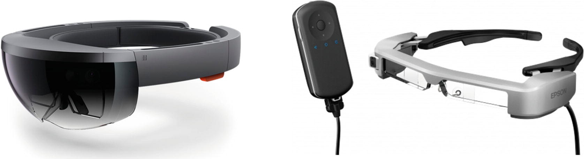
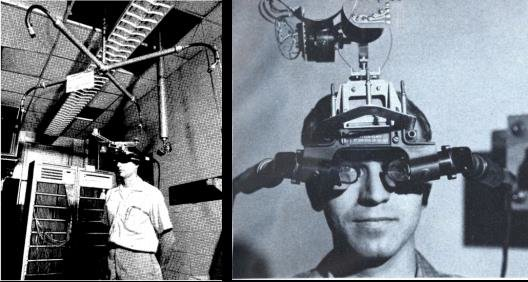
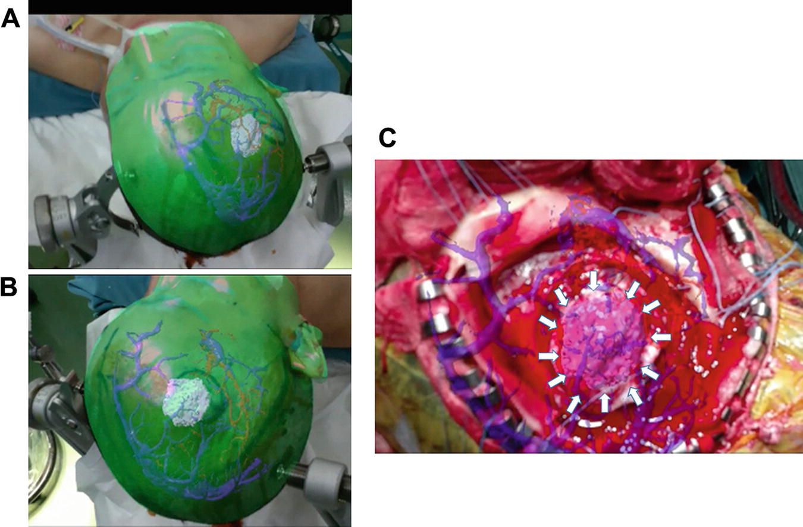
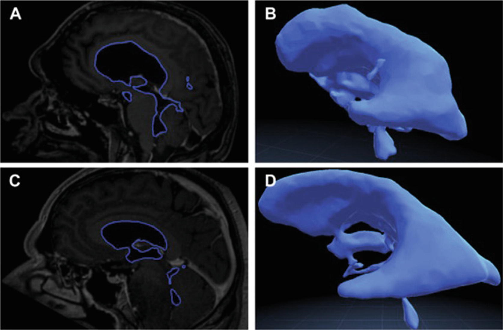
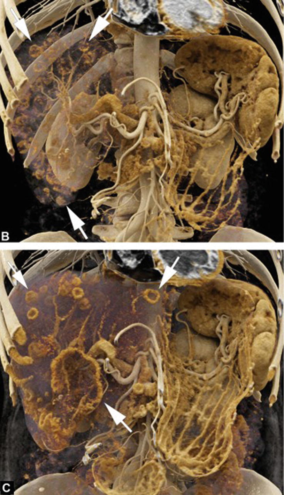
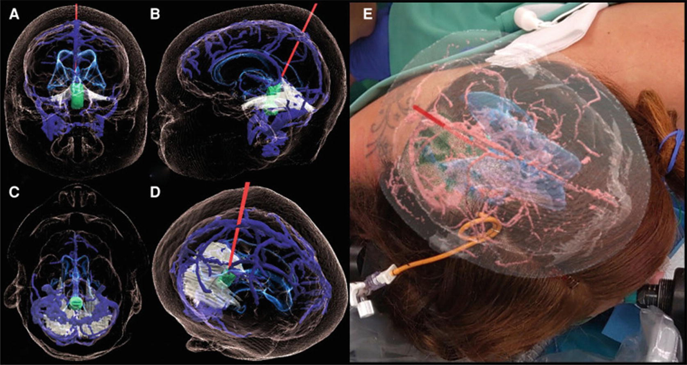
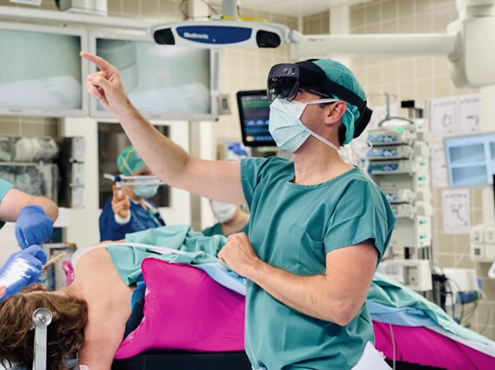
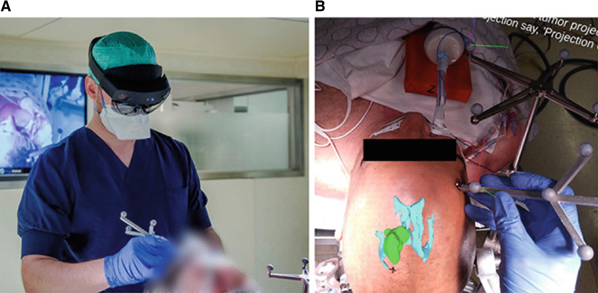
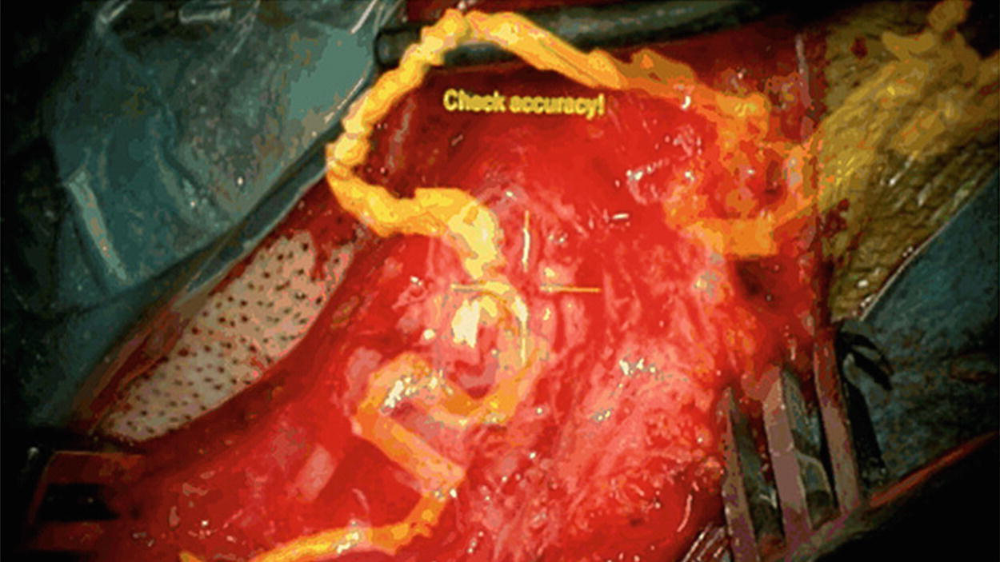
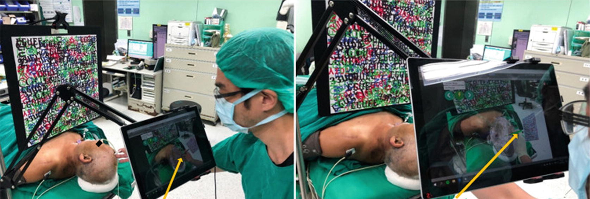

Augmented Reality in Neurosurgery
Applications and Evolution
傅冠豪 醫師
基隆長庚神經外科
What is Augmented Reality?
- Superimposing digital content onto the real environment
- Integrates 3D anatomical data with real world
- AR ≠ VR
- AR: Digital + Real world
- VR: Completely virtual

Modern AR Head-Mounted Displays
Historical Evolution of AR
- 1968: Ivan Sutherland - "The Sword of Damocles"
- First AR head-mounted display
- 1990s: First AR neuronavigation systems
- 2015+: Second wave - Modern wearable devices
- Microsoft HoloLens 1 & 2
- Magic Leap 1 & 2
- Apple Vision Pro
- 85% of AR research published after 2014

"The Sword of Damocles" (1968)
First AR HMD by Ivan Sutherland
Why AR in Neurosurgery?
Traditional Navigation
- Attention shift to separate monitor
- Pointer needed for correlation
- Increased cognitive workload
AR Navigation
- Direct overlay on surgical field
- No attention shift
- Reduced cognitive workload
- Better spatial understanding

Technical Components of AR
- Image Segmentation - Identify regions of interest
- Model Rendering - Create 3D visualizations
- AR Projection - Display virtual content
- Image-to-Patient Registration - Align virtual with real
Each component has multiple technical solutions with unique advantages and limitations
Image Segmentation Methods

Automatic segmentation of ventricular system
- Threshold-based
- Simple, limited for complex anatomy
- Atlas-based
- Deep Learning
- Automatic, accurate
- Requires training data
Rendering: Volumetric vs Surface
Volumetric

- Complete volume data
- Realistic visualization
- Computationally intensive
Surface-based

- External boundaries only
- Computationally efficient
- Clear, concise visualization
AR Projection Modalities
- Digital Displays - Tablets, smartphones
- Accurate but cumbersome to hold
- Heads-Up Displays (HUDs) - Surgical microscopes
- Integrated into microscope optics
- Head-Mounted Displays (HMDs) - AR glasses
- Hands-free, spatial mapping capable

Image-to-Patient Registration
Critical for accurate neuronavigation
- Optical Tracking - Infrared retroreflective markers
- Electromagnetic Tracking - Magnetic field-based
- No line-of-sight limitations
- Computer Vision - Feature-based, markerless
- No additional hardware needed
- Intraoperative Imaging - Real-time CT/MRI
- Fully automatic registration

Measuring AR Accuracy
| Metric |
Definition |
AR Limitation |
| TRE |
Target Registration Error |
Doesn't account for projection offset |
| FRE |
Fiducial Registration Error |
No correlation with clinical accuracy |
| Planning Deviation |
Planned vs achieved target |
User-dependent |
| Overlay Error |
Visual projection discrepancy |
Most clinically relevant for AR |
AR in Vascular Neurosurgery

AR overlay of vessels in microscope
- Aneurysm surgery
- Arteriovenous malformations
- AV fistulas
Applications:
- Craniotomy planning
- Vessel localization
- Complex angioarchitecture visualization
- Clip size selection
AR in Neuro-Oncology

- Tumor Types: Gliomas, Metastases, Meningiomas
- Pre-operative: Incision and craniotomy planning
- Intra-operative: Distinguish tumor-brain interface
- Advanced: Fiber tractography integration for safe resection
- Challenge: Brain shift after tumor resection
AR in Spinal Surgery
Most extensively studied AR application
- Primary Use: Pedicle screw insertion guidance
- Advantages:
- Real-time instrument tracking
- Reduced fluoroscopy (radiation exposure)
- Superior user experience
- Non-inferior accuracy vs conventional navigation
- Other Applications:
- Discectomy
- Intradural tumor resection
- Kyphoplasty/Vertebroplasty
AR in Education & Training
Medical Education
- 3D anatomical models
- No need for cadavers
- Increased motivation
- Decreased cognitive load
Surgical Training
- Realistic simulations
- Haptic feedback
- Performance metrics
- Procedures: EVD, burr holes, pedicle screws
Patient education: Increased understanding and satisfaction
Current Limitations
- Projection Errors: Additional registration error component
- Visual Conflicts: Vergence-accommodation mismatch
- Can cause eye strain, vertigo
- Computational Power: Limited by HMD size
- Complex anatomy, real-time tracking challenges
- Visual Occlusion: Holograms obstruct surgical view
- Can be mitigated with specialized shaders
- Brain Shift: Tissue displacement after resection
- Requires intraoperative imaging or tissue modeling
- Cost & Complexity: Substantial investment required
Future Directions
Technical Improvements
- High-resolution spatial mapping
- Enhanced projection accuracy
- Varifocal displays
- Improved computational power
- Better graphical shaders
Clinical Integration
- Real-time brain shift correction
- Multimodal imaging integration
- AI-powered segmentation
- User feedback-driven design
- Industry collaboration
Goal: Transform AR from ancillary tool to central OR technology
Conclusion
- AR is evolving from experimental to clinical reality
- Proven applications across neurosurgical subspecialties
- Technical challenges being addressed by innovation
- Potential to revolutionize neurosurgical practice
The future neurosurgeon will seamlessly integrate virtual and real worlds
Questions?